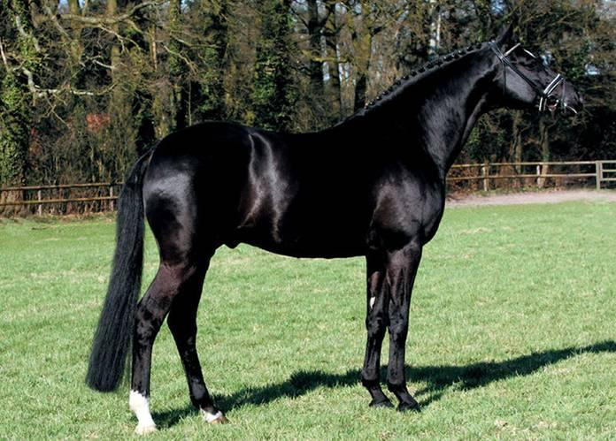
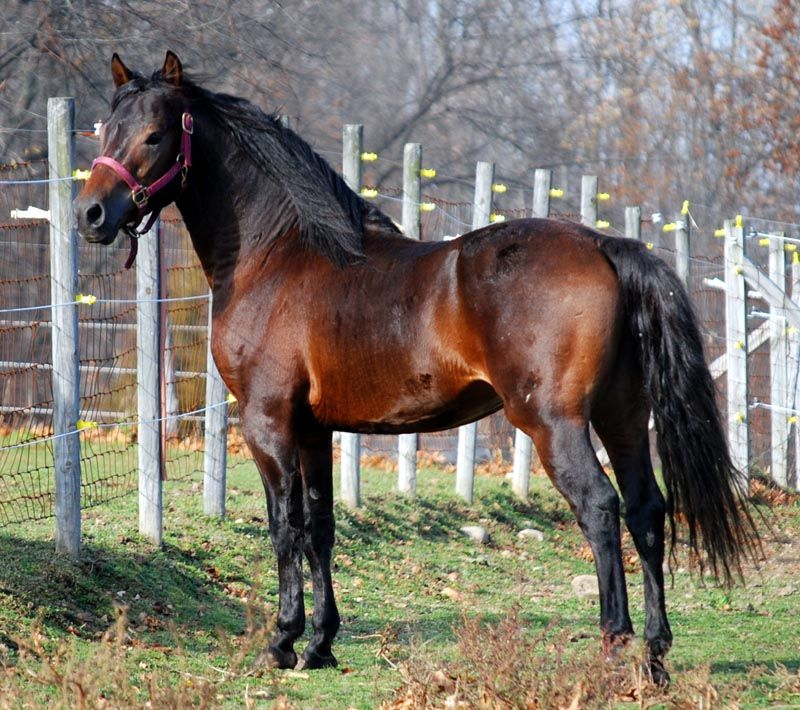

Arabian:origin Saudi Arabia

fun fact: Araibian horses are one of the oldest horse breeds.
Andalusian:origin Spain
fun fact:Sainish Conquitadors rode Andalusian horses.
Appaloosa:origin Spain
fun fact:Apploosa horses are also known as a walkaloosa because it generly walks.
Belgian:origin Belgium
Falabella:origin Argentina
fun fact:Falabellas are the smallest horse in the world.
Lipizzaner:origin Austria
fun fact:Lipizzaners are born black but change to white as they get older.
Thoroughbred:origin Denmark
fun fact:Thoroughbreds are one of the fastest horses.
Friesian:origin Holland

fun fact:Most people who wants a horse want a Friesian.
Trakehner:origin Germany
fun fact:Trakehner are also one of the fastest horses.
Hanoverian:origin Germany
Shire:origin Denmark
fun fact:Shire horses are the biggest horse.
Morgan:origin United States
fun fact:Morgan horses are the most common horse in the United States.
Selle Francais:origin France
fun fact:Selle Francais are good dressage horses.
Tennessee Walking:origin United States
fun fact:Tennessee Walking horses have a gait that only they do.
Holsteiner:origin Germany
Quarter Horse:origin United States
fun fact Quarter horses have the fastest quarter mile.
Saddlebred:origin United States
Standardbred:origin United States
Fun fact: Standardbreds are good for sulky racing.
Cleveland Bay:origin United States
Chincoteague Pony:origin United States
Fun fact :Chincoteague ponys are in the movie "Misty of Chcoteague"